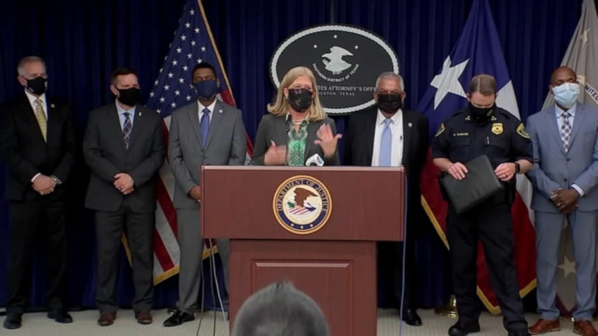
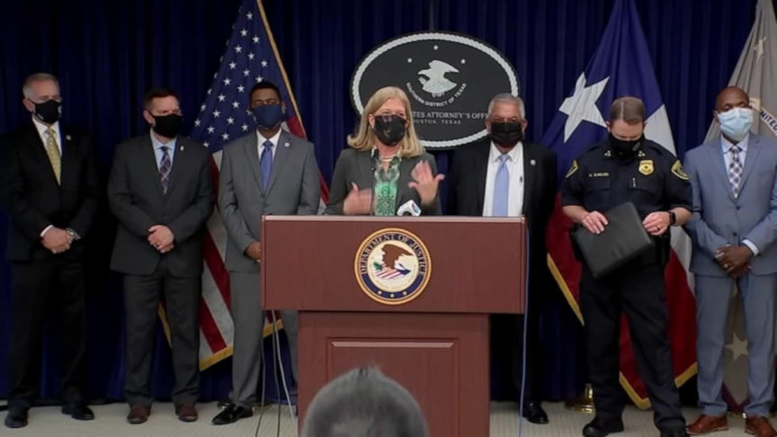

Man Admits Exchanging Crypto Without Government Approval
~1 min read | Published on 2022-06-03, tagged Cryptocurrency, Exchange, General-News using 194 words.
A 49-year-old man admitted exchanging cryptocurrency through Paxful and LocalBitcoins.
According to an announcement from the U.S. Attorney’s Office for the Southern District of Texas, 49-year-old Hien Ngoc Vo admitted to operating an unlicensed money transmitting business. Between March 16, 2016, and June 8, 2016, the defendant processed $515,147.19 in Bitcoin on Paxful and LocalBitcoins.
“Vo received funds in the form of cash, direct bank deposits, American Express credit cards as well as Amazon and generic gift cards. He used several bank accounts to conduct his business, but the banks shut down the accounts after inquiring about the origination of the funds.”

Vo collected between 5 and 30% of every transaction he conducted. Additionally, Vo did not require any form of identification from his clients, nor did he ask “the purpose for which they were purchasing the cryptocurrency.”
Chief U.S. District Judge Lee H. Rosenthal will sentence Vo on September 5, 2020. Vo faces a maximum sentence of five years in prison. He will serve much less time behind bars if any.
[em]Houston area unlicensed cryptocurrency business results in conviction[/em] | archive.is, justice.gov
Apparently this is something they are regularly prosecuting now?
According to an announcement from the U.S. Attorney’s Office for the Southern District of Texas, 49-year-old Hien Ngoc Vo admitted to operating an unlicensed money transmitting business. Between March 16, 2016, and June 8, 2016, the defendant processed $515,147.19 in Bitcoin on Paxful and LocalBitcoins.
“Vo received funds in the form of cash, direct bank deposits, American Express credit cards as well as Amazon and generic gift cards. He used several bank accounts to conduct his business, but the banks shut down the accounts after inquiring about the origination of the funds.”

U.S. Attorney Jennifer B. Lowery announced the guilty plea.
Vo collected between 5 and 30% of every transaction he conducted. Additionally, Vo did not require any form of identification from his clients, nor did he ask “the purpose for which they were purchasing the cryptocurrency.”
Chief U.S. District Judge Lee H. Rosenthal will sentence Vo on September 5, 2020. Vo faces a maximum sentence of five years in prison. He will serve much less time behind bars if any.
[em]Houston area unlicensed cryptocurrency business results in conviction[/em] | archive.is, justice.gov
Apparently this is something they are regularly prosecuting now?